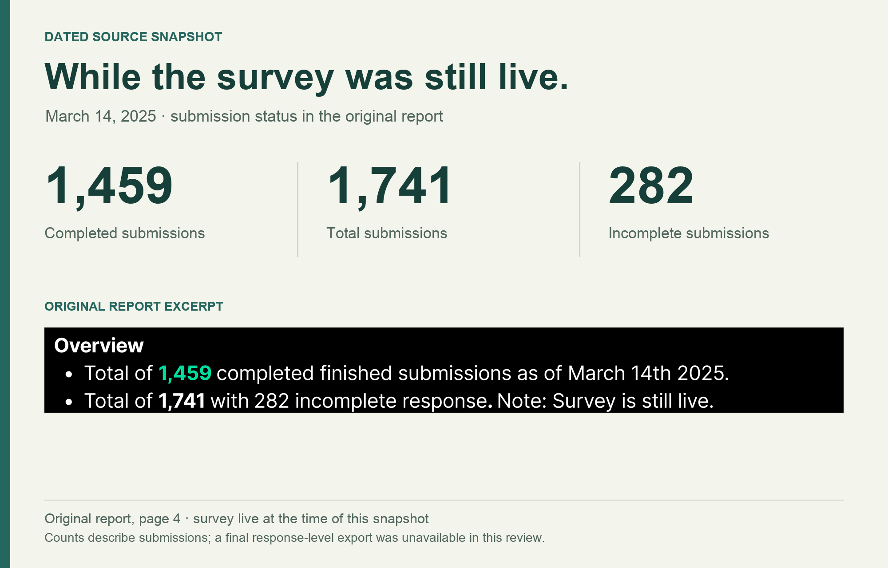
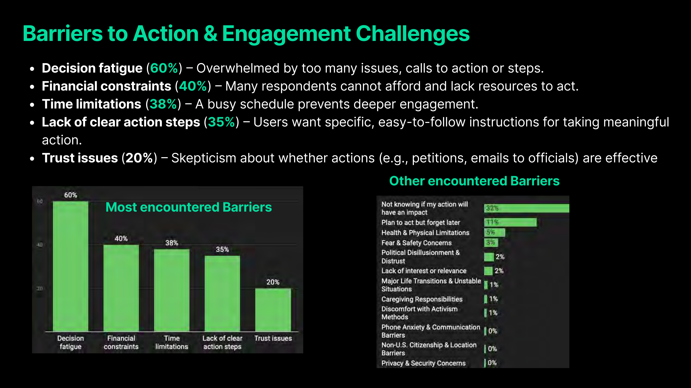

Oak AI · Creator audience research / SURVEY RESEARCH · PRODUCT DIRECTION
Find what stands between interest and action.
An audience survey showed why caring about an issue did not always lead to taking the next step. The findings helped shape a proposed Action Hub.

THE PROBLEM
What needed to become clearer?
Oak and creator Qasim Rashid were exploring ways to help an engaged audience turn shared values into useful action. Interest alone could not tell us what kind of support people needed, or what was getting in their way.
MY CONTRIBUTION
Make the question answerable.
I led the survey’s creation, launch, and analysis. I brought together reported behaviors, barriers, tool interests, and open responses to identify where a product could make the next step easier.
DECISION 01
Study the gap between caring and doing.
The survey asked about audience context, current behavior, barriers, and possible support. That let us look beyond general enthusiasm for a tool. At the March 14 snapshot, the study had 1,459 completed submissions out of 1,741 total submissions. Recruitment reached a voluntary creator and advocacy audience, so I treated the findings as directional for that audience.

DECISION 02
Look at the friction behind the intention.
The report identified decision fatigue, money, time, unclear action steps, and trust as barriers. Decision fatigue was the largest of these reported percentages at 60%. This shifted the product discussion toward reducing the effort of choosing and starting an action. The report does not preserve a base for each item, so these percentages describe reported patterns rather than population estimates.
DECISION 03
Translate the pattern into a smaller next step.
I recommended clearer action steps, reusable templates, reminders, and a way to see the impact of an action. Together, those recommendations informed the proposed Action Hub direction. The research gave the team a reason to focus on helping people act, rather than simply giving them more information.

OUTCOME & REFLECTION
A product direction grounded in the effort of acting.
The study produced an audience findings report and recommendations for a proposed Action Hub. It connected the audience’s reported obstacles to specific forms of support the team could explore: a clear step, a useful template, a reminder, and visible impact.
A person can care deeply and still need help deciding where to start. The useful research question was what made action difficult—not whether people cared.
The next question I would test
I would test a narrow action flow with members of the intended audience: can they choose a relevant action, understand the commitment, and complete the first step? I would also check the survey instrument and item bases before comparing audience segments.
March 2025 Oak / Qasim survey findings report and reviewed project retrospective. Counts are the March 14 snapshot, not a final deduplicated sample. Voluntary self-report limits generalization; product adoption and business impact were not measured in the supplied evidence.